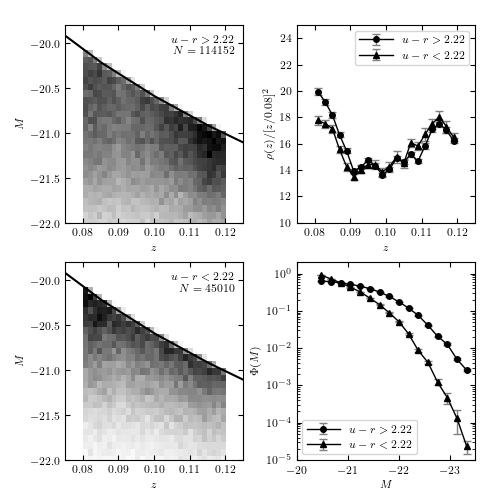

Lynden-Bell Luminosity function¶
Figure 4.10.
An example of computing the luminosity function for two u-r color-selected subsamples of SDSS galaxies using Lynden-Bell’s C- method. The galaxies are selected from the SDSS spectroscopic sample, with redshift in the range 0.08 < z < 0.12 and flux limited to r < 17.7. The left panels show the distribution of sources as a function of redshift and absolute magnitude. The distribution p(z, M) = rho(z) Phi(m) is obtained using Lynden-Bell’s method, with errors determined by 20 bootstrap resamples. The results are shown in the right panels. For the redshift distribution, we multiply the result by z^2 for clarity. Note that the most luminous galaxies belong to the photometrically red subsample, as discernible in the bottom-right panel.
{kind=link}
114152 red galaxies
45010 blue galaxies
- using precomputed bootstrapped luminosity function results
- using precomputed bootstrapped luminosity function results
# Author: Jake VanderPlas
# License: BSD
# The figure produced by this code is published in the textbook
# "Statistics, Data Mining, and Machine Learning in Astronomy" (2013)
# For more information, see http://astroML.github.com
# To report a bug or issue, use the following forum:
# https://groups.google.com/forum/#!forum/astroml-general
import os
import numpy as np
from matplotlib import pyplot as plt
from scipy import interpolate, stats
from astroML.lumfunc import binned_Cminus, bootstrap_Cminus
from astroML.cosmology import Cosmology
from astroML.datasets import fetch_sdss_specgals
#----------------------------------------------------------------------
# This function adjusts matplotlib settings for a uniform feel in the textbook.
# Note that with usetex=True, fonts are rendered with LaTeX. This may
# result in an error if LaTeX is not installed on your system. In that case,
# you can set usetex to False.
from astroML.plotting import setup_text_plots
setup_text_plots(fontsize=8, usetex=True)
#------------------------------------------------------------
# Get the data and perform redshift/magnitude cuts
data = fetch_sdss_specgals()
z_min = 0.08
z_max = 0.12
m_max = 17.7
# redshift and magnitude cuts
data = data[data['z'] > z_min]
data = data[data['z'] < z_max]
data = data[data['petroMag_r'] < m_max]
# divide red sample and blue sample based on u-r color
ur = data['modelMag_u'] - data['modelMag_r']
flag_red = (ur > 2.22)
flag_blue = ~flag_red
data_red = data[flag_red]
data_blue = data[flag_blue]
# truncate sample (optional: speeds up computation)
#data_red = data_red[::10]
#data_blue = data_blue[::10]
print data_red.size, "red galaxies"
print data_blue.size, "blue galaxies"
#------------------------------------------------------------
# Distance Modulus calculation:
# We need functions approximating mu(z) and z(mu)
# where z is redshift and mu is distance modulus.
# We'll accomplish this using the cosmology class and
# scipy's cubic spline interpolation.
cosmo = Cosmology()
z_sample = np.linspace(0.01, 1.5, 100)
mu_sample = [cosmo.mu(z) for z in z_sample]
mu_z = interpolate.interp1d(z_sample, mu_sample)
z_mu = interpolate.interp1d(mu_sample, z_sample)
data = [data_red, data_blue]
titles = ['$u-r > 2.22$', '$u-r < 2.22$']
markers = ['o', '^']
archive_files = ['lumfunc_red.npz', 'lumfunc_blue.npz']
def compute_luminosity_function(z, m, M, m_max, archive_file):
"""Compute the luminosity function and archive in the given file.
If the file exists, then the saved results are returned.
"""
Mmax = m_max - (m - M)
zmax = z_mu(m_max - M)
if not os.path.exists(archive_file):
print ("- computing bootstrapped luminosity function ",
"for %i points" % len(z))
zbins = np.linspace(0.08, 0.12, 21)
Mbins = np.linspace(-24, -20.2, 21)
dist_z, err_z, dist_M, err_M = bootstrap_Cminus(z, M, zmax, Mmax,
zbins, Mbins,
Nbootstraps=20,
normalize=True)
np.savez(archive_file,
zbins=zbins, dist_z=dist_z, err_z=err_z,
Mbins=Mbins, dist_M=dist_M, err_M=err_M)
else:
print "- using precomputed bootstrapped luminosity function results"
archive = np.load(archive_file)
zbins = archive['zbins']
dist_z = archive['dist_z']
err_z = archive['err_z']
Mbins = archive['Mbins']
dist_M = archive['dist_M']
err_M = archive['err_M']
return zbins, dist_z, err_z, Mbins, dist_M, err_M
#------------------------------------------------------------
# Perform the computation and plot the results
fig = plt.figure(figsize=(5, 5))
fig.subplots_adjust(left=0.13, right=0.95, wspace=0.3,
bottom=0.08, top=0.95, hspace=0.2)
for i in range(2):
m = data[i]['petroMag_r']
z = data[i]['z']
M = m - mu_z(z)
# compute the luminosity function for the given subsample
zbins, dist_z, err_z, Mbins, dist_M, err_M = \
compute_luminosity_function(z, m, M, m_max, archive_files[i])
#------------------------------------------------------------
# First axes: plot the observed 2D distribution of (z, M)
ax = fig.add_subplot(2, 2, 1 + 2 * i)
H, xbins, ybins = np.histogram2d(z, M, bins=(np.linspace(0.08, 0.12, 31),
np.linspace(-23, -20, 41)))
ax.imshow(H.T, origin='lower', aspect='auto',
interpolation='nearest', cmap=plt.cm.binary,
extent=(xbins[0], xbins[-1], ybins[0], ybins[-1]))
# plot the cutoff curve
zrange = np.linspace(0.07, 0.13, 100)
Mmax = m_max - mu_z(zrange)
ax.plot(zrange, Mmax, '-k')
ax.text(0.95, 0.95, titles[i] + "\n$N = %i$" % len(z),
ha='right', va='top',
transform=ax.transAxes)
ax.set_xlim(0.075, 0.125)
ax.set_ylim(-22, -19.8)
ax.set_xlabel('$z$')
ax.set_ylabel('$M$')
#------------------------------------------------------------
# Second axes: plot the inferred 1D distribution in z
ax2 = fig.add_subplot(2, 2, 2)
factor = 0.08 ** 2 / (0.5 * (zbins[1:] + zbins[:-1])) ** 2
ax2.errorbar(0.5 * (zbins[1:] + zbins[:-1]),
factor * dist_z, factor * err_z,
fmt='-k' + markers[i], ecolor='gray', lw=1, ms=4,
label=titles[i])
#------------------------------------------------------------
# Third axes: plot the inferred 1D distribution in M
ax3 = fig.add_subplot(224, yscale='log')
# truncate the bins so the plot looks better
Mbins = Mbins[3:-1]
dist_M = dist_M[3:-1]
err_M = err_M[3:-1]
ax3.errorbar(0.5 * (Mbins[1:] + Mbins[:-1]), dist_M, err_M,
fmt='-k' + markers[i], ecolor='gray', lw=1, ms=4,
label=titles[i])
#------------------------------------------------------------
# set labels and limits
ax2.legend(loc=1)
ax2.xaxis.set_major_locator(plt.MultipleLocator(0.01))
ax2.set_xlabel(r'$z$')
ax2.set_ylabel(r'$\rho(z) / [z / 0.08]^2$')
ax2.set_xlim(0.075, 0.125)
ax2.set_ylim(10, 25)
ax3.legend(loc=3)
ax3.xaxis.set_major_locator(plt.MultipleLocator(1.0))
ax3.set_xlabel(r'$M$')
ax3.set_ylabel(r'$\Phi(M)$')
ax3.set_xlim(-20, -23.5)
ax3.set_ylim(1E-5, 2)
plt.show()